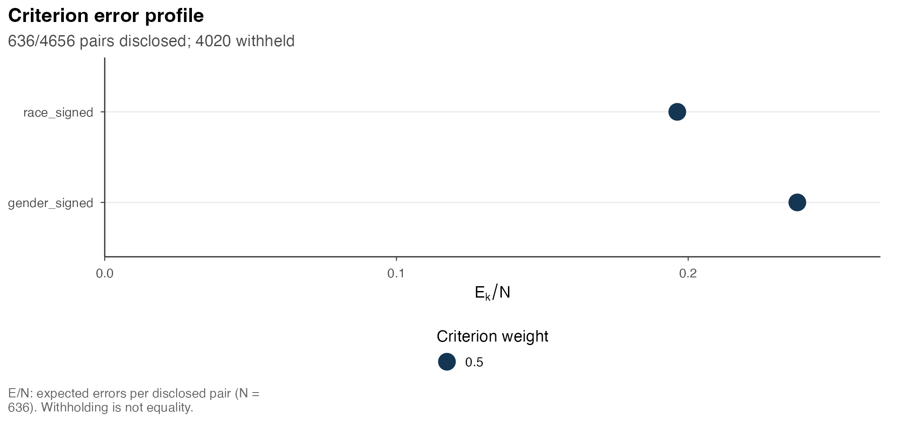
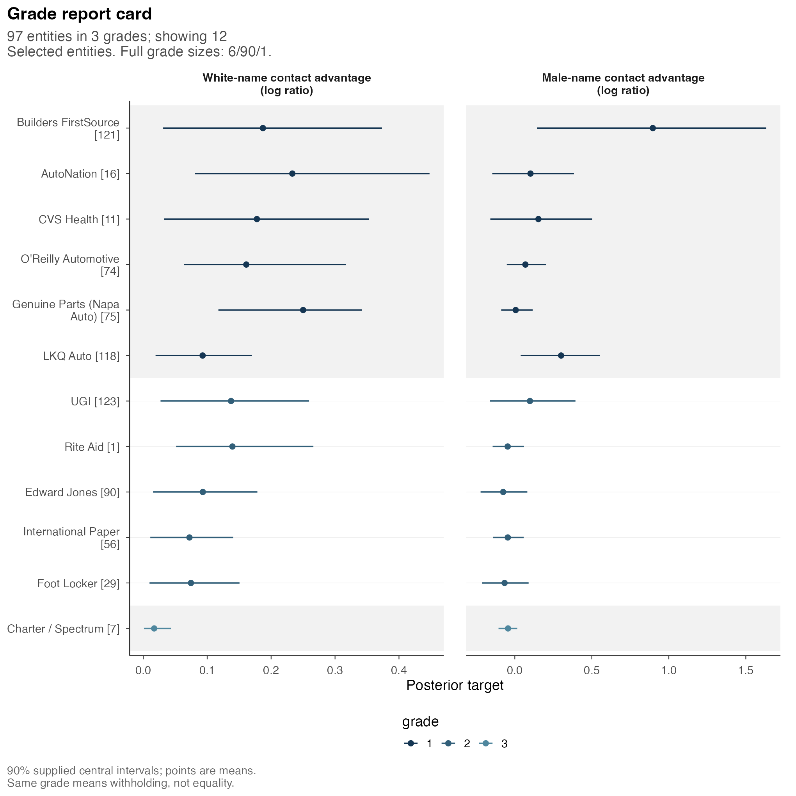
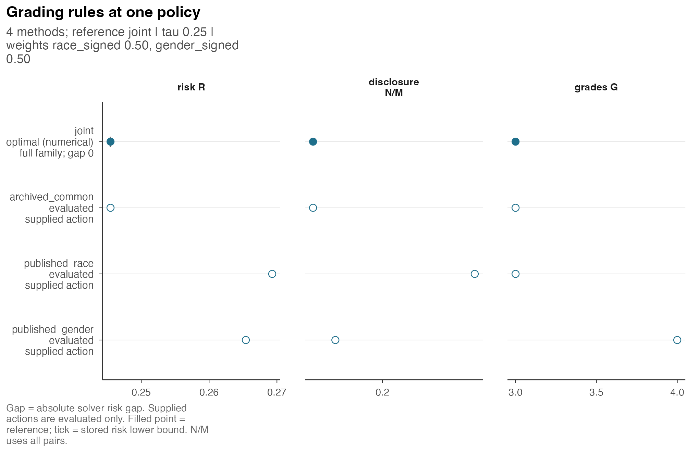

Employer comparisons may concern both race and gender, with a single grade required to summarize the two criteria. We consider such a report for the 97 firms in the bundled Kline, Rose, and Walters case. The analysis specifies the comparison probabilities and reporting loss, examines the resulting disclosure and withholding, and compares the common grading with archived single-criterion cards.
The results use a prepared analysis of the bundled input. Rendering the article requires neither posterior model fitting nor a solver. An optional call specifies a new analysis using HiGHS. The input and prepared result refer to the same firms and targets, with no Gaussian approximation.
Targets and source data
The data are adapted from Kline, Rose, and Walters’ Data and Code for: A Discrimination Report Card, available in the replication archive. They concern the original correspondence experiment. A grade here describes the modelled contact differences in those data; it is not a statement about an employer’s current practices or the effect of an intervention.
library(postrank)
krw <- pr_case_krw
dim(krw$input$e)
#> [1] 97 97 2
krw$input$targets
#> race_signed
#> "log(p_white) - log(p_black); larger white-name contact advantage means higher reporting priority"
#> gender_signed
#> "log(p_male) - log(p_female); larger male-name contact advantage means higher reporting priority"The first target is the signed white-name contact advantage, . The second is the signed male-name contact advantage, . Larger values receive higher reporting priority on each criterion. Consequently, grade 1 denotes the higher-priority group. A negative gender target means a female-name contact advantage; taking its absolute value would answer a different question.
Both targets are log ratios. Their posterior means differ from the logarithms of posterior mean probability ratios, and exponentiating a posterior mean log ratio generally differs from taking the posterior mean ratio. Retaining the supplied scale ensures a common interpretation of the target, intervals and pairwise comparisons.
The source README states, “The data are licensed under a Creative
Commons/CC-BY-NC license.” Its license version is unspecified. The
bundled adaptation retains the same noncommercial source notice. See
?pr_case_krw for attribution and the extraction
description. The package code license does not replace those
conditions.
Posterior specification
The original empirical-Bayes analysis supplies posterior grids. This case uses continuous uniform cells whose boundaries lie between retained grid midpoints, preserving each cell’s posterior mass. The first race cell has nonnegative support. The fitted prior and its parameters remain fixed. The supplied means and 90% equal-tail marginal intervals describe those same continuous cells.
For distinct firms, e[i, j, k] is the posterior
probability that firm i’s target is no larger than firm
j’s target on criterion k. It is therefore the
expected directional error when the report places i above
j. These probabilities were calculated assuming conditional
independence of firms given the fixed empirical-Bayes quantities.
Importing the array preserves this assumption without establishing its
empirical validity.
The archive’s Pi matrix, discrete grid atoms and the
continuous cell law used here represent different probability
specifications. Pi is a published comparison reference with
its own conventions. Grid atoms assign mass to nodes and can produce
positive equality probabilities; the continuous law distributes each
mass over an interval and declares zero equality probability for
distinct firms. The archive’s plotting repair and the grade generator’s
probability floor are not applied to this input. Their reference records
are retained separately in krw$reference$archive_pi.
Criterion-wise probabilities and marginal summaries suffice for the weighted loss below, which adds expected errors across criteria. The input contains neither target draws nor a within-firm joint distribution of race and gender. Consequently, it does not identify probabilities involving a composite race-and-gender target or simultaneous dominance on both criteria.
Loss and grade constraints
The reporting loss assigns equal criterion weights, a withholding cost of 0.25, and at most 4 grades. The weights average expected directional errors; they neither combine the posterior means nor impose equal precision across criteria.
settings <- postrank_settings(
weights = c(race_signed = .5, gender_signed = .5),
tau = .25,
G_max = 4L
)There are unordered firm pairs. A grade either discloses a direction for a pair or leaves it unordered. Let be the number disclosed and the expected number of wrong-direction disclosures on criterion . The risk for this policy is
Each pair receives a common grade relation whose expected error may differ across criteria. Assigning all firms to one grade is admissible and gives risk by withholding every comparison. This action makes no equality claim about firms. Likewise, an increase in the grade cap expands the permitted number of groups without requiring all grades to be occupied.
The following optional call uses the supplied interval level, explicitly selects a solver and imposes a time limit. It is not executed during document rendering. For a new run, the returned status and bound determine whether optimality was established within tolerance; the time limit alone provides no such assurance.
analysis <- postrank(
krw$input, settings = settings,
level = krw$input$summaries$level,
backend = "highs",
control = postrank_control(time_limit = 30, threads = 1L, seed = 1304L),
fragility = FALSE
)Common grading
analysis
#> <postrank_analysis> 97 entities in 3 grades (sizes 6 / 90 / 1)
#> 2 criteria: race_signed, gender_signed.
#> Posterior loss: 0.2455.
#> Disclosed 636 of 4656 pairs (13.7%); withheld 4020.
#> Expected error among disclosed pairs: race_signed 0.196; gender_signed 0.237.
#> Solver: Optimal within solver tolerances.
#> Optimization gap: 0; requested absolute gap 1e-08.
#> Prepared: report card.
#> Grade 1 has highest priority; a shared grade withholds the comparison.
#> 97 entities; membership in get_grades(x)
#> ! 1 warning recorded: Reported lower bound exceeded the validated action r...
#> i summary(x) explains the loss, settings and bounds; get_grades(x) returns
#> all grades.
get_risk(analysis)
#> $risk
#> [1] 0.2454704
#>
#> $lower_bound
#> [1] 0.2454704
#>
#> $gap
#> [1] 0
#>
#> $status
#> [1] "optimal"The prepared result has 3 grades containing 6 / 90 / 1 firms. It discloses 636 of 4,656 pairs (13.7%) and withholds 4,020. Its risk is 0.24547041087, compared with 0.25 for withholding all pairs under the same settings. The large middle grade thus reflects substantial withholding at the specified cost.
The returned status is optimal, meaning optimal within the numerical solver tolerances for the supplied coefficient problem. The recorded gap is 0. The result also retains a warning: the reported lower bound exceeded the validated action risk by 2.78e-17, within its bound-validation tolerance of 1.19e-09, and was clamped to the action risk. Thus a displayed zero gap is a numerical optimization statement conditional on this finite probability table. It does not certify the underlying posterior approximation, the empirical-Bayes assumptions, or the firms’ true contact differences.
profile <- get_profile(analysis)
knitr::kable(profile[, c("criterion", "weight", "E", "E_over_N", "E_over_M", "risk")],
digits = 4, row.names = FALSE)| criterion | weight | E | E_over_N | E_over_M | risk |
|---|---|---|---|---|---|
| race_signed | 0.5 | 124.8246 | 0.1963 | 0.0268 | 0.2427 |
| gender_signed | 0.5 | 150.9958 | 0.2374 | 0.0324 | 0.2483 |
The expected error per disclosed pair is 0.196 for race and 0.237 for
gender. These ratios use the same 636 disclosed pairs. By contrast,
E_over_M divides by all 4,656 pairs. Neither quantity is a
count of observed mistakes: both average over the declared posterior
uncertainty. The criterion risks also include the cost of the withheld
pairs.
postrank_plot_profile(analysis, show = "E_over_N")
Open full-size figureExpected wrong-direction comparisons per disclosed pair. Both criteria describe the same common grade, and both use N as the denominator.
A weighted loss may retain a direction with greater uncertainty on
one criterion when the other criterion provides sufficient support.
Equal weights can therefore yield different criterion-specific errors.
This analysis imposes no separate criterion error budget, so
q is unavailable in the extracted profile rather than equal
to zero.
Posterior summaries for selected firms
The following report card includes every firm outside the largest
grade and a spaced selection within that grade. This display allocation
retains the small outer groups and permits legible intervals. It changes
neither the grading nor the population represented by the full result,
and is not a representative subsample. All 97 firms remain available in
as.data.frame(analysis).
grades <- get_grades(analysis)
largest_grade <- as.integer(names(which.max(table(grades))))
middle_ids <- names(grades)[grades == largest_grade]
selected <- c(
names(grades)[grades != largest_grade],
middle_ids[round(seq(1, length(middle_ids), length.out = 5))]
)
firm_labels <- setNames(
paste0(krw$units$firm_name, " [", krw$units$entity_id, "]"),
krw$units$entity_id
)
firm_labels <- vapply(firm_labels, function(z)
paste(strwrap(z, width = 23), collapse = "\n"), "")
postrank_plot_report_card(
analysis, entities = selected, entity_labels = firm_labels,
criterion_labels = c(
race_signed = "White-name contact advantage\n(log ratio)",
gender_signed = "Male-name contact advantage\n(log ratio)"
), ncol = 2
)
Open full-size figureSelected firms, with identifiers retained beside their names. Points and intervals are marginal means and 90% equal-tail intervals from the continuous cell law. The original common grades are unchanged.
The horizontal intervals describe uncertainty about firm targets, whereas the grades specify the reporting action across firms. The grading is chosen from pairwise directional probabilities and the declared loss, rather than interval overlap. Firms assigned to the same grade may therefore have different posterior means, intervals and targets.
Firm names provide display labels, while IDs retain the
correspondence with source rows. The estimates and standard errors in
krw$units are source estimates and differ from the
posterior summaries shown here. The latter are available in
as.data.frame(analysis, what = "report_card"). Combining
source standard errors with posterior means would not reconstruct the
reported intervals.
Evaluation of archived cards under a common loss
The archived single-criterion cards use = 0.25, corresponding to = 0.20. The common analysis above uses = 0.25. Numerically equal lambda and tau values therefore do not denote the same withholding cost. The original single-criterion cards also permit up to 97 grades and address one target at a time. Direct comparison of their original losses with the common loss would therefore compare values of different objective functions.
For a common comparison, each archived card can be evaluated under
the current signed cell probabilities, equal criterion weights and
common withholding cost. Supplying its named grade vector to
postrank_compare() performs this fixed-action evaluation.
The archived optimization is neither rerun nor assigned a new
optimization status.
comparison <- postrank_compare(
analysis,
archived_common = krw$reference$signed_core$grade,
published_race = krw$reference$single_criterion$grade$race,
published_gender = krw$reference$single_criterion$grade$gender,
baselines = character()
)
knitr::kable(comparison$table[, c("method", "risk", "N", "G", "status", "family_feasible")],
digits = 6, row.names = FALSE)| method | risk | N | G | status | family_feasible |
|---|---|---|---|---|---|
| joint | 0.245470 | 636 | 3 | optimal | TRUE |
| archived_common | 0.245470 | 636 | 3 | evaluated | TRUE |
| published_race | 0.269304 | 1324 | 3 | evaluated | TRUE |
| published_gender | 0.265418 | 731 | 4 | evaluated | TRUE |
postrank_plot_compare(comparison)
Open full-size figureAll displayed risks use the current signed cell input and one common policy. Supplied archived actions are evaluated only; their original numerical statuses are not inherited.
The archived and prepared common actions differ in 0 pair relations. The archived race and gender cards disclose 1,324 and 731 pairs, respectively. These evaluations describe the trade-off between disclosure and expected error for the fixed actions under the common loss; they do not establish a general advantage over single-criterion reports.
Even for a fixed action, its evaluated risk depends on the coefficient law. For the archived common action, the archive-reference risk is 0.24546990279 and the continuous-cell risk is 0.24547041087, a difference of 5.08e-07. The difference results from the probability reference rather than a new optimization. Its magnitude is retained when assessing numerical reproduction.
Changes of target and the limits of the stored evidence
The inputs krw$alternatives$race and
krw$alternatives$gender support single-criterion analyses
of the same signed targets.
krw$alternatives$absolute_gender retains signed race and
replaces gender by the magnitude of its contact gap. This input folds
the original continuous cells, including those crossing zero, and
provides the corresponding probabilities and summaries.
Absolute gender assigns high priority to a large advantage in either direction. It therefore changes the target even when the numerical policy settings are held fixed. The stored action is a separate reference whose risk cannot be interpreted as an improvement over the signed analysis. Changes in weights or tau likewise require evaluation or optimization under the newly specified loss.
The source research campaign completed 9 of 236 distinct numerical problems: 8 passed its solver and finite-reference coefficient checks, and 1 had an independent reference validation. The other 227 were not run. Those qualifications belong to their declared research calculations. They are neither a completed sensitivity sweep nor additional certification of this prepared package result. This article does not run a weight path, refit the prior, or fill in the missing research problems.
A smaller one-criterion analysis is given in Analysis with one or several criteria. The preparation of other posterior inputs is described in Analysis of supplied posterior results. Reading and exporting results documents the result tables, and Figures and sensitivity analysis considers explicit changes to reporting settings.
The several-criteria article develops the distinction between weighted directional errors and composite targets. Monte Carlo uncertainty and diagnostics separates numerical checks from model calibration and empirical-Bayes conditioning.